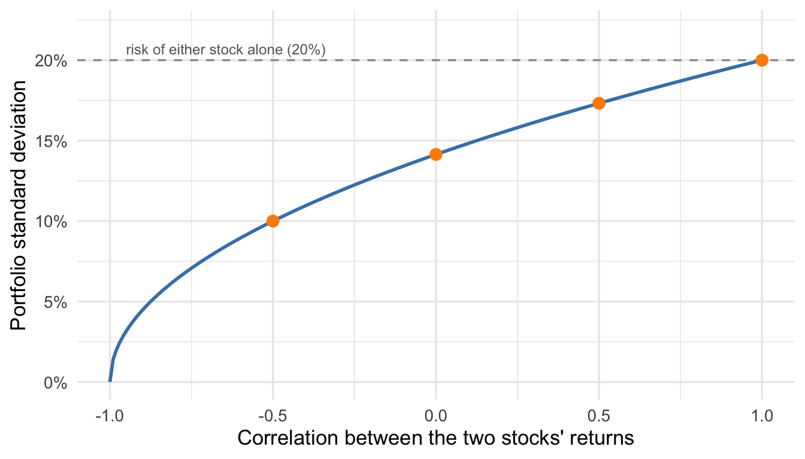
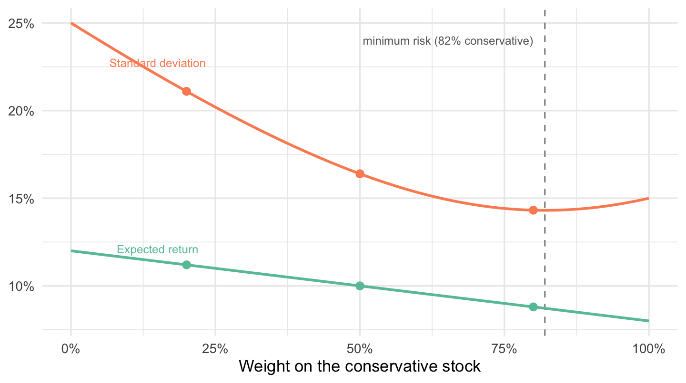
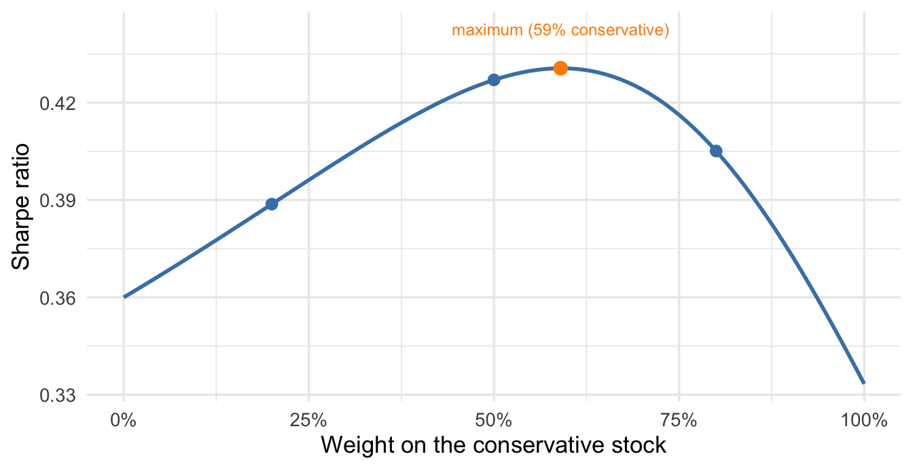
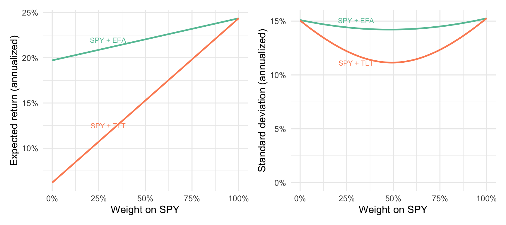
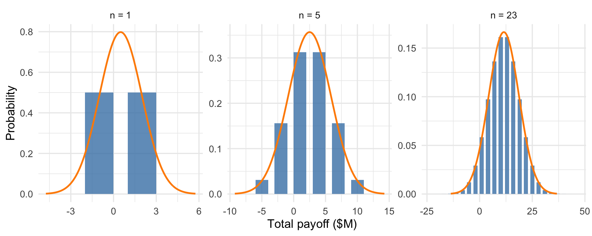

15 Combining Random Variables
So far we have worked with one random variable at a time: a distribution, a mean to summarize its center, and a standard deviation to summarize its spread. Many of the quantities we actually care about are built out of several random variables at once. A firm’s total revenue is the sum of revenue across regions. Its profit is revenue minus costs. And an investment portfolio’s return is a weighted average of the returns on the assets inside it. This chapter develops the rules for the mean and variance of these combinations, and uses them to answer a practical question: how can you choose which assets to combine in a portfolio?
Our running example uses the portfolios data, which record weekly returns on three exchange-traded funds over the two years from October 2023 through September 2025 (Three-Asset Weekly Return and Price Series, October 2023–September 2025 2025). An exchange-traded fund (ETF) holds a basket of assets and trades like a single stock, so buying one share buys a slice of the whole basket. SPY holds the S&P 500 and is a standard stand-in for the U.S. stock market — it’s the same market series we have used since the chapter on describing distributions. EFA holds large stocks from developed markets outside North America: Europe, Japan, Australia. TLT holds long-term U.S. Treasury bonds, government debt with twenty or more years to maturity. Each return is the percent change in the fund’s value from one Friday close to the next, expressed as a proportion, for 104 weeks.
15.1 Portfolios are linear combinations
Suppose you split your money between two of these funds, putting a fraction \(w\) of it in the first and the remaining \(1 - w\) in the second. Next week’s return on the whole portfolio is
\[ R_p = w R_1 + (1 - w) R_2, \]
where \(R_1\) and \(R_2\) are the two funds’ returns. In words: your money grows by a weighted average of the two returns, with weights equal to the fractions invested. The fractions \(w\) and \(1 - w\) are called portfolio weights.
\(R_p\) is an example of a linear combination of random variables: a new random variable of the form
\[ Z = aX + bY + c, \]
built by scaling \(X\) and \(Y\) by constants, adding them, and possibly shifting by a constant \(c\). The portfolio has \(a = w\), \(b = 1 - w\), and \(c = 0\), but the same form shows up in many other settings. For example, future profit is a random variable defined by future revenue minus variable costs (both random variables because they are uncertain) minus known fixed costs: That’s a linear combination with \(a = 1\), \(b = -1\), and \(c\) negative.
The portfolio \(R_p\) is a new random variable, with its own distribution, its own mean, and its own standard deviation. What are they? Working out the full distribution of a linear combination is tedious. The mean and variance follow simple rules.
15.2 The mean and variance of a linear combination
The mean of a linear combination does what you’d expect: averages add.
NoteThe mean of a linear combination
\[ E[aX + bY + c] = a\,E[X] + b\,E[Y] + c. \]
This rule always holds, whether or not \(X\) and \(Y\) are independent.
In words: to get the expected value of the combination, combine the expected values the same way. If east-coast revenue averages $2M and west-coast revenue averages $1.5M, expected total revenue is $3.5M. No assumptions required.
The variance is different: it depends on how \(X\) and \(Y\) move together. We already have the measures for that from Section 14.4: the covariance and correlation of random variables. The definition is restated here because the variance rule runs on it.
NoteDefinition: Covariance and correlation of random variables
For random variables \(X\) and \(Y\) with means \(\mu_X\) and \(\mu_Y\), the covariance is the expected product of their deviations:
\[ \text{Cov}(X, Y) = E\big[(X - \mu_X)(Y - \mu_Y)\big] = \sum_{\text{pairs } (x,\, y)} \Pr(X = x \text{ and } Y = y)\,(x - \mu_X)(y - \mu_Y), \]
and the correlation rescales it to a unitless number between \(-1\) and \(+1\):
\[ \text{Corr}(X, Y) = \frac{\text{Cov}(X, Y)}{SD(X)\,SD(Y)}. \]
In words: for every possible pair of outcomes, ask whether \(X\) and \(Y\) land on the same side of their means, multiply the two deviations, and average with probability weights. Pairs that agree — both above or both below — push the covariance up; pairs that disagree pull it down. If \(X\) and \(Y\) are independent, every product of deviations averages away and the covariance and correlation are exactly zero. This is just like the sample covariance and correlation we computed in Section 7.2, except now we are working with a probability model rather than a dataset.
The variance of a linear combination depends critically on the covariance between the two random variables:
NoteThe variance of a linear combination
\[ \text{Var}(aX + bY + c) = a^2\,\text{Var}(X) + b^2\,\text{Var}(Y) + 2ab\,\text{Cov}(X, Y). \]
When \(X\) and \(Y\) are independent (or merely uncorrelated) the last term is zero, and variances add:
\[ \text{Var}(aX + bY + c) = a^2\,\text{Var}(X) + b^2\,\text{Var}(Y). \]
In words: scale each variance by the squared constant, then correct for how the two variables move together. The constant shift \(c\) moves the distribution but doesn’t change its spread, so it drops out entirely. When \(a\) and \(b\) are both positive, a positive covariance inflates the variance — the two variables tend to miss high together and miss low together, so their swings compound. A negative covariance shrinks it, because one variable’s bad draws tend to arrive alongside the other’s good ones.
One more fact makes these rules usable with data. Sample statistics obey exactly the same algebra: if you build the new column \(z_i = a x_i + b y_i + c\) in a dataset, its sample mean is \(a \bar{x} + b \bar{y} + c\) and its sample variance is \(a^2 s_x^2 + b^2 s_y^2 + 2ab\, s_{xy}\), where \(s_{xy}\) is the sample covariance from Section 7.2. This is not an approximation; it’s an algebraic identity. So when we estimate means, variances, and covariances from returns data, we can push those estimates through the rules above and get the portfolio’s estimated mean and variance without ever constructing the portfolio column itself.
15.3 Portfolio risk and diversification
Applied to the two-asset portfolio \(R_p = w R_1 + (1-w) R_2\), the rules read:
\[ E[R_p] = w\,E[R_1] + (1 - w)\,E[R_2] \] \[ \text{Var}(R_p) = w^2\,\text{Var}(R_1) + (1 - w)^2\,\text{Var}(R_2) + 2w(1 - w)\,\text{Cov}(R_1, R_2). \]
The portfolio’s expected return is the weighted average of the two expected returns. Its standard deviation — the risk — depends on the two assets’ covariance as well as their individual variances. The formula may not be intuitive, but the relationship it describes is.
Start with the simplest possible case: two stocks, each with a 10% expected return and a 20% standard deviation, held in equal weights (\(w = 0.5\)). The expected return of the portfolio is \(0.5(10\%) + 0.5(10\%) = 10\%\), the same as either stock alone. Any weighted average of two 10% expected returns is 10%. The variance is another matter. Writing \(\text{Cov}(R_1, R_2) = \text{Corr}(R_1, R_2) \times 0.20 \times 0.20\) and plugging in,
\[ \text{Var}(R_p) = 0.5^2(0.20)^2 + 0.5^2(0.20)^2 + 2(0.5)(0.5)\,\text{Cov}(R_1, R_2) = 0.02 + 0.02\,\text{Corr}(R_1, R_2). \]
The portfolio’s variance — and so its risk — depends on how correlated the two stocks are. Let’s see a few examples:
- Perfectly correlated, \(\text{Corr} = 1\): \(\text{Var}(R_p) = 0.04\), so \(SD(R_p) = 20\%\). The two stocks move in lockstep, and the “portfolio” is no different from holding either one alone. We haven’t diversified at all.
- Positively correlated, \(\text{Corr} = 0.5\): \(SD(R_p) = \sqrt{0.03} \approx 17.3\%\). The stocks tend to miss in the same direction, but not always, so risk drops — some.
- Independent, so \(\text{Corr} = 0\): \(SD(R_p) = \sqrt{0.02} \approx 14.1\%\). Their deviations do not move systematically together, so the covariance term drops out.
- Negatively correlated, \(\text{Corr} = -0.5\): \(SD(R_p) = \sqrt{0.01} = 10\%\). Now each stock actively hedges the other. One’s below-average weeks tend to arrive during the other’s above-average weeks, and the portfolio is half as risky as either holding.
Figure 15.1 traces the whole curve. Same two stocks, same 10% expected return in every case — but the portfolio’s risk runs from 20% all the way down to 0% depending on the correlation.
All else equal, if our goal is controlling risk we prefer assets that are negatively correlated — when one is down, the other tends to be up and vice-versa, which stabilizes the portfolio. However, adding positively correlated assets can still produce a portfolio with a better risk profile.
15.3.1 Optimizing the allocation
Identical assets keep the algebra clean but don’t reflect reality. Suppose now we’re building a portfolio of two stocks with different characteristics. Consider a conservative stock \(C\) with an 8% expected return and a 15% standard deviation, and a growth stock \(G\) with a 12% expected return and a 25% standard deviation, with \(\text{Corr}(C, G) = 0.3\). The portfolio is \(R_p = wC + (1-w)G\), where \(w\) is the fraction in the conservative stock. Three candidate allocations are given in the table below:
| Portfolio | Expected return | Standard deviation |
|---|---|---|
| Conservative (w = 0.8) | 8.8% | 14.3% |
| Balanced (w = 0.5) | 10.0% | 16.4% |
| Aggressive (w = 0.2) | 11.2% | 21.1% |
Working down the rows of the table we see that each step toward the growth stock adds the same 1.2 percentage points of expected return; the portfolio always interpolates expected returns linearly. The risk does not move in matching steps: it climbs 2.1 points going from conservative to balanced, then 4.7 more going from balanced to aggressive. Figure 15.2 shows the full picture as \(w\) sweeps from all-growth to all-conservative.

The risk is minimized at about 82% in the conservative stock — not 100%. In fact, no one should ever hold more than 82% conservative: portfolios to the right of the dashed line have both lower expected return and higher risk than the minimum-risk mix. Which portfolio to choose to the left of that line depends on your appetite for risk.
15.3.2 Risk-adjusted returns: the Sharpe ratio
Choosing along the curve is easier with a single number that trades return against risk. The standard one compares excess returns (over the “risk-free rate” — think interest in a savings account, or yield on U.S. Treasury bills) to the portfolio’s standard deviation. This is the Sharpe ratio (Sharpe 1966):
NoteDefinition: The Sharpe ratio
\[ \text{Sharpe ratio} = \frac{E[R_p] - r_f}{SD(R_p)}. \]
In words: the Sharpe ratio is the expected return you earn in excess of the risk-free rate, per unit of risk taken. If you can earn \(r_f\) without any risk at all, only the return above \(r_f\) compensates you for the portfolio’s swings, and dividing by the standard deviation puts portfolios of different riskiness on a common scale. Between two portfolios with the same excess return, the less risky one has the higher Sharpe ratio.
With a 3% risk-free rate, the three allocations compare like this:
| Portfolio | Expected return | Standard deviation | Sharpe ratio |
|---|---|---|---|
| Conservative (w = 0.8) | 8.8% | 14.3% | 0.41 |
| Balanced (w = 0.5) | 10.0% | 16.4% | 0.43 |
| Aggressive (w = 0.2) | 11.2% | 21.1% | 0.39 |
The balanced portfolio wins. Moving from conservative to balanced buys 1.2 points of expected return for 2.1 points of risk, a trade the Sharpe ratio approves; moving from balanced to aggressive buys the same 1.2 points for 4.7 points of risk, and the ratio drops. Figure 15.3 shows the Sharpe ratio across all allocations: it peaks at about 59% in the conservative stock, between the balanced and conservative candidates.

The Sharpe ratio is not the only way to pick a point on the curve, but it is a common and practical one, and we’ll use it to compare portfolios built from real funds next.
15.4 Choosing between two diversifiers
Back to the three funds. Suppose your entire portfolio is currently the U.S. market — all SPY — and you’ve decided to diversify by adding exactly one of the other two funds. Which one? Figure 15.4 plots the three return series, and the summary table follows.

Returns are usually quoted at annual rates, so from here on we annualize: the weekly mean gets multiplied by 52, and the weekly standard deviation by \(\sqrt{52}\). Variances, not standard deviations, add across the 52 roughly independent weeks of a year. This extends the two-variable rule from Section 15.2 to 52 variables; the general rule appears in Section 15.5.
| Fund | Holds | Expected return (annualized) | Standard deviation (annualized) |
|---|---|---|---|
| SPY | U.S. stocks (S&P 500) | 24.4% | 15.3% |
| EFA | International developed-market stocks | 19.7% | 15.1% |
| TLT | Long-term U.S. Treasury bonds | 6.2% | 15.1% |
The table looks decisive. All three funds carried nearly identical risk over this window — about 15% a year — so the comparison between the two candidates comes down to expected return, and EFA’s 19.7% is more than three times TLT’s 6.2%. Same risk, triple the return. Is there anything left to decide?
Pause on that question, because the table is answering a different one. The mean and standard deviation describe each fund held on its own. You aren’t going to hold either fund on its own — you’re going to mix it with SPY, and the portfolio variance formula needs an input the table doesn’t show: the covariance between each candidate and the fund you already hold. Figure 15.5 supplies it.

The two candidates could hardly be more different on this dimension. EFA is a stock fund, and international stocks catch most of the same news that moves U.S. stocks: a week that’s bad for SPY is usually bad for EFA too. Its correlation with the market is 0.75. TLT’s correlation is 0.08 — Treasury bonds respond to interest rates and inflation news, not corporate earnings, and over this window their moves were almost uncorrelated with the stock market’s.
Now run both candidate portfolios through the rules of Section 15.2, using the sample means, standard deviations, and covariances as inputs. Figure 15.6 shows the expected return and risk of each mix as the weight on SPY sweeps from 0 to 1.

The left panel shows that at every weight below 100% SPY, the EFA mix has the higher expected return, as expected. The right panel is more interesting. The SPY + EFA curve barely bends. The high degree of correlation means that the two ETFs tend to move together and the only diversification benefit comes from the weeks they don’t. No weighting of SPY and EFA gets the portfolio’s risk below about 14.2%. The SPY + TLT curve declines faster and bottoms out lower, near 11.1% at roughly an even split. The two funds are often moving in opposite directions, and the additional diversification lets us better control risk.
There is no universally right portfolio. The right choice depends on what we are optimizing for, but whatever the goal, the comparison should account for both expected return and risk. For the Sharpe ratios we also need a risk-free rate; the portfolios data include the weekly T-bill rate, which averaged 4.7% annualized over this window. One way to compare the options is to fix a risk target and ask what expected return each can deliver. For example, take 14.2% — the lowest risk the EFA pairing can reach at any weight. The best EFA mix at that risk earns 21.9%. The TLT mix that hits the same risk holds 92% SPY and earns 22.9%:
| Portfolio | Expected return | Standard deviation | Sharpe ratio |
|---|---|---|---|
| 100% SPY | 24.4% | 15.3% | 1.29 |
| Best SPY + EFA mix at 14.2% risk (48% SPY) | 21.9% | 14.2% | 1.21 |
| SPY + TLT mix at the same risk (92% SPY) | 22.9% | 14.2% | 1.28 |
At the same level of risk, the TLT portfolio delivers about 1.0 percentage points more expected return, and the higher Sharpe ratio to match. And if you want less risk than 14.2%, only the TLT portfolio can get there — all the way down to 11.1% if you like.
The 100% SPY row has the highest estimated Sharpe ratio in the table, although only barely. That does not make diversification a mistake. The Sharpe ratio compares return per unit of risk; it does not decide how much risk you should take. Holding SPY alone means accepting an estimated 15.3% annual risk, while mixing in TLT is what makes lower-risk portfolios possible. The small Sharpe advantage also depends on SPY’s estimated 24.4% annual return over this two-year window, so we should not treat the ranking as a permanent feature of the funds.
Held on its own, TLT was the obviously inferior asset to EFA: the same risk as EFA for a third of the expected return. Mixed with the market, it can be the better addition, because it diversifies the portfolio more effectively.
15.5 Sums and averages of independent random variables
The two-asset rules extend directly to any number of random variables: means add term by term, and for uncorrelated variables, so do variances (each scaled by its squared weight). The most important special case is \(n\) random variables that are independent and identically distributed (iid) — independent draws, all from the same distribution. The simplest case would be a coin flip, repeated \(n\) times, but the rules hold for any iid random variables.
NoteSums and averages of iid random variables
Let \(X_1, X_2, \dots, X_n\) be independent random variables, each with the same distribution, with mean \(\mu\) and variance \(\sigma^2\). Their sum \(S = X_1 + X_2 + \dots + X_n\) has
\[ E[S] = n\mu, \qquad \text{Var}(S) = n\sigma^2, \qquad SD(S) = \sqrt{n}\,\sigma, \]
and their average \(\bar{X} = S / n\) has
\[ E[\bar{X}] = \mu, \qquad \text{Var}(\bar{X}) = \sigma^2 / n, \qquad SD(\bar{X}) = \sigma / \sqrt{n}. \]
In words: the sum’s mean grows in proportion to \(n\), but its standard deviation grows only like \(\sqrt{n}\) — the total becomes more predictable relative to its size as \(n\) grows. Equivalently, the average of \(n\) iid random variables has the same mean as a single random variable but only \(1/\sqrt{n}\) of its standard deviation. Independence is what makes the variances simply add; there are no covariance terms to carry. In the next chapter we’ll use this result to quantify uncertainty in statistical estimates.
For now, let’s look at a story about how aggregation quantifiably mitigates risk. In his book Misbehaving, the economist Richard Thaler recounted a meeting with the CEO of a large company and the 23 executives who ran its divisions. In the meeting he offered the executives a hypothetical investment. The project would either earn a profit of $2 million, with probability 0.5, or lose $1 million, with probability 0.5. Thaler asked for a show of hands: who would take it? Three of the twenty-three executives raised their hands. Working out the payoff’s mean and standard deviation shows what the other twenty were weighing.
Let \(X\) be the payoff of one project, in millions:
\[ E[X] = 0.5(2) + 0.5(-1) = 0.5, \]
an expected profit of $500,000. So taking on the project leads to positive expected profits, meaning the opportunity is at least worth considering. It is, however, quite risky for the individual executives, who get one shot at the project each. We can read that right off the distribution, or by computing the variance of profits:
\[ \text{Var}(X) = 0.5(2 - 0.5)^2 + 0.5(-1 - 0.5)^2 = 2.25, \]
giving \(SD(X) = 1.5\), or $1.5 million. The expected value is positive and substantial. The problem is the downside: each project loses money with probability 0.5, and a $1 million loss might end a division head’s career. Twenty of twenty-three executives judged the risk not worth it.
Then Thaler turned to the CEO: if the projects’ outcomes were independent across divisions — one project’s success unrelated to another’s — how many would he want to take on? His answer: all of them. The rules above quantify why the CEO correctly saw this as a very safe bet. The total payoff \(S = X_1 + X_2 + \dots + X_{23}\) has
\[ E[S] = 23 \times 0.5 = 11.5, \qquad \text{Var}(S) = 23 \times 2.25 = 51.75, \qquad SD(S) = \sqrt{51.75} \approx 7.19. \]
The firm expects to make $11.5 million, with a standard deviation of about $7.2 million. The standard deviation grew relative to a single project, but the expected value grew much more.
We can also do the analysis per-project. Define \(\bar X = (X_1 + X_2 + \dots + X_{23})/23\) as the average payoff per project. Per project, the average profit \(\bar{X}\) still has mean $0.5 million — bundling doesn’t change the expected return per project — but its standard deviation drops from $1.5 million to \(1.5/\sqrt{23} \approx 0.31\) million.
The CEO is presumably interested in one additional number: \(\Pr(S < 0)\). The mean and standard deviation alone can’t deliver that probability. We need the distribution of \(S\).
15.6 The Central Limit Theorem
We could work out the distribution of \(S\) exactly by listing every possible sequence of successes and failures across the 23 projects. The projects are independent and each succeeds with probability 0.5, so every sequence has probability \((1/2)^{23}\). The probability of a particular total is that number times the number of sequences producing it. Figure 15.7 does the counting for portfolios of 1, 5, and 23 projects.

Each individual project has one of the least normal distributions imaginable: two spikes, nothing in between. Add five of them and the total already starts to take a bell shape. Add 23 and the exact distribution is quite close to the normal distribution with the same mean and variance. This is not a coincidence of this example, it’s one of the most important results in probability and statistics: the Central Limit Theorem.
NoteThe Central Limit Theorem
Let \(X_1, X_2, \dots, X_n\) be iid random variables with mean \(\mu\) and variance \(\sigma^2\). Then for large \(n\), their sum is approximately normal,
\[ X_1 + X_2 + \dots + X_n \;\approx\; N(n\mu,\; n\sigma^2), \]
and so is their average:
\[ \bar{X} \;\approx\; N(\mu,\; \sigma^2/n). \]
In words: add up enough independent draws from the same distribution and the total follows a normal distribution, no matter what that distribution looks like. The mean and variance follow the rules in Section 15.5; the Central Limit Theorem specifies the rest of the distribution, in the limit. How large \(n\) must be depends on the distribution of each variable, but it’s often surprisingly small. In this example, \(n = 23\) is enough to make the normal approximation quite accurate.
Now we can compute the probability of a loss. Approximating \(S \approx N(11.5,\, 51.75)\), we get
\[ \Pr(S < 0) \approx 0.055. \]
An individual project will lose money half the time, but with a portfolio of many independent projects that risk is spread out and the chance of a loss declines. Independence is important here! If the projects were dependent (say because they are all affected by the same economic factor), our probability calculation would be wildly misleading.